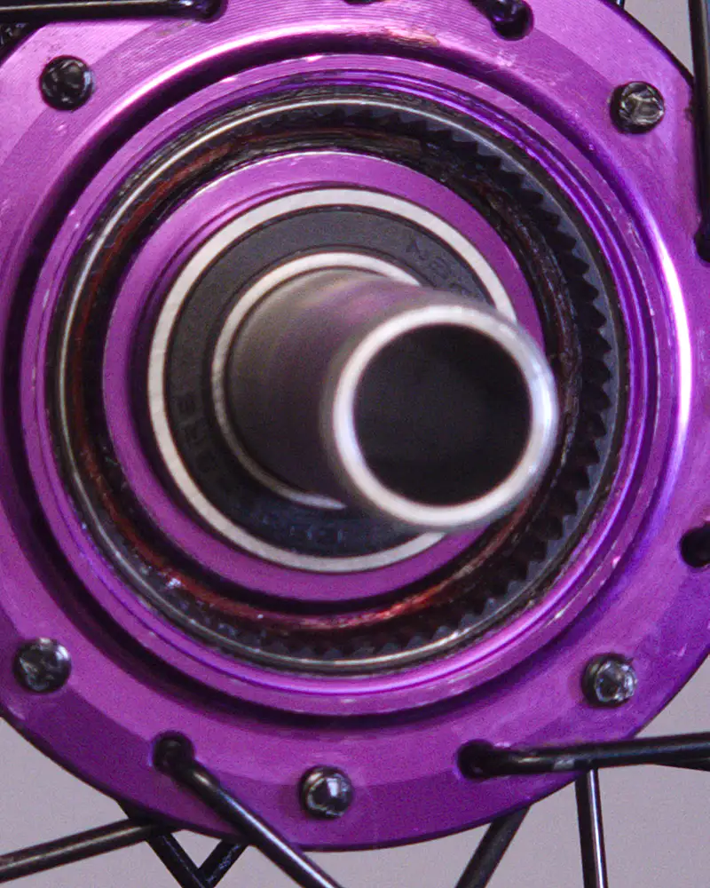
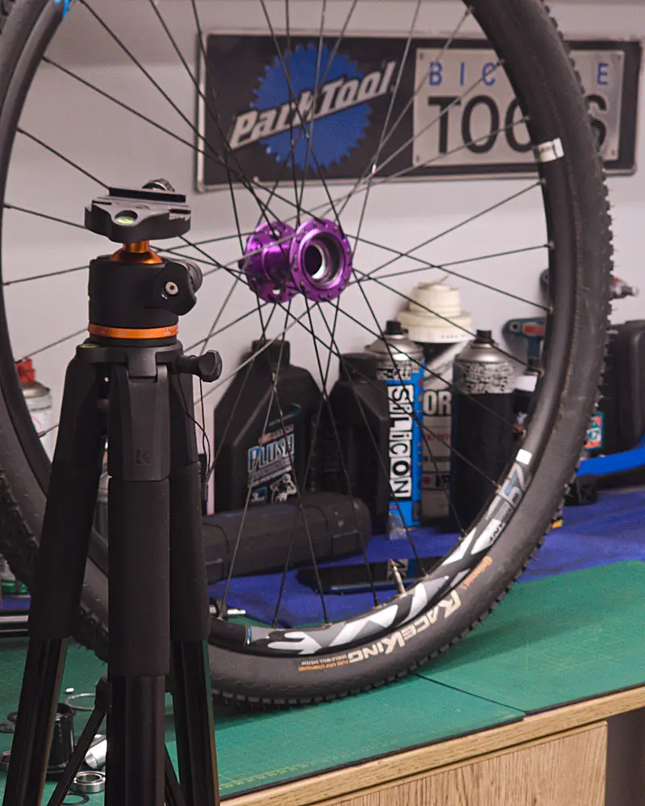
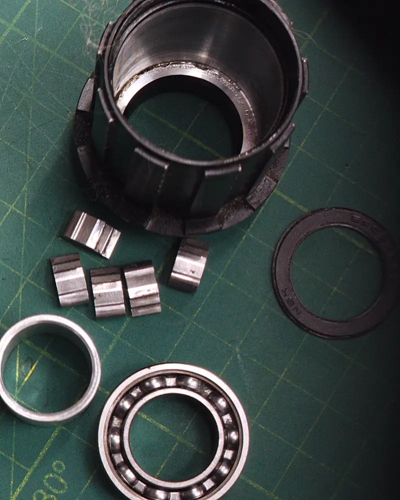
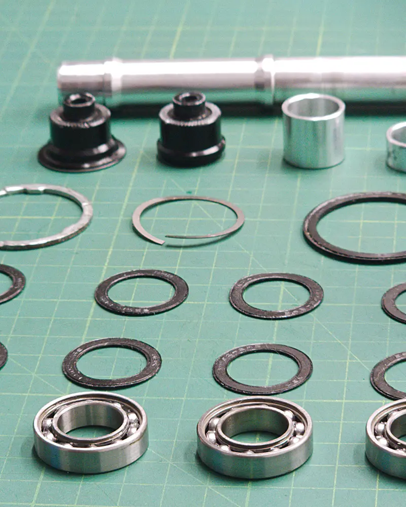
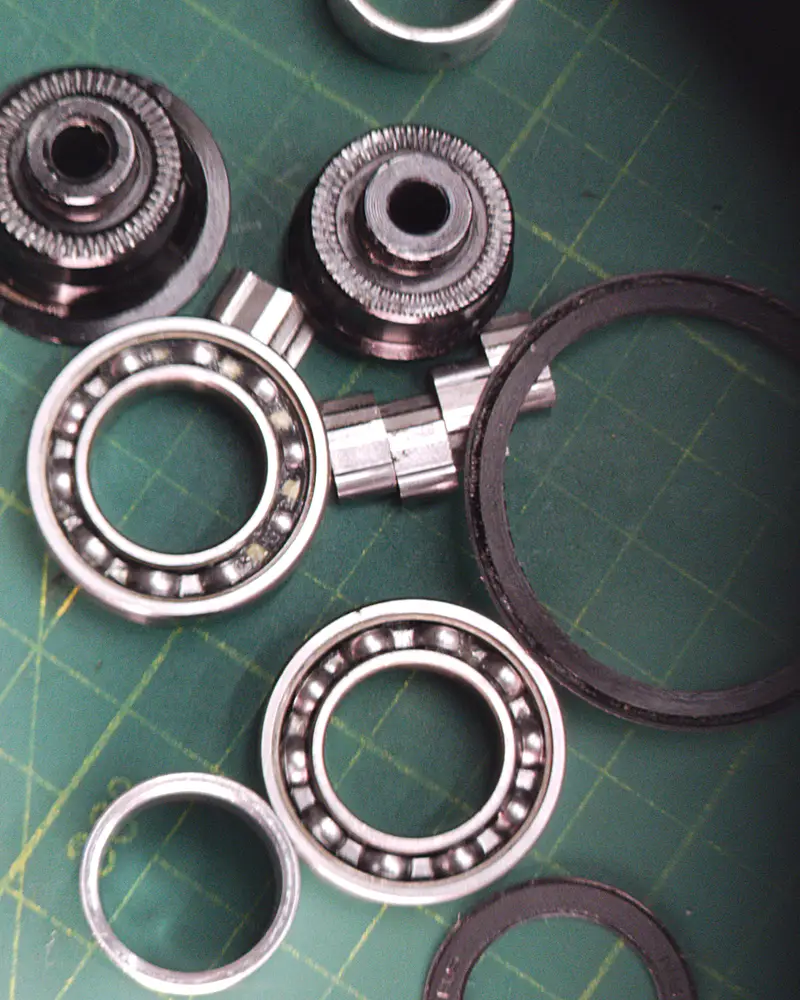
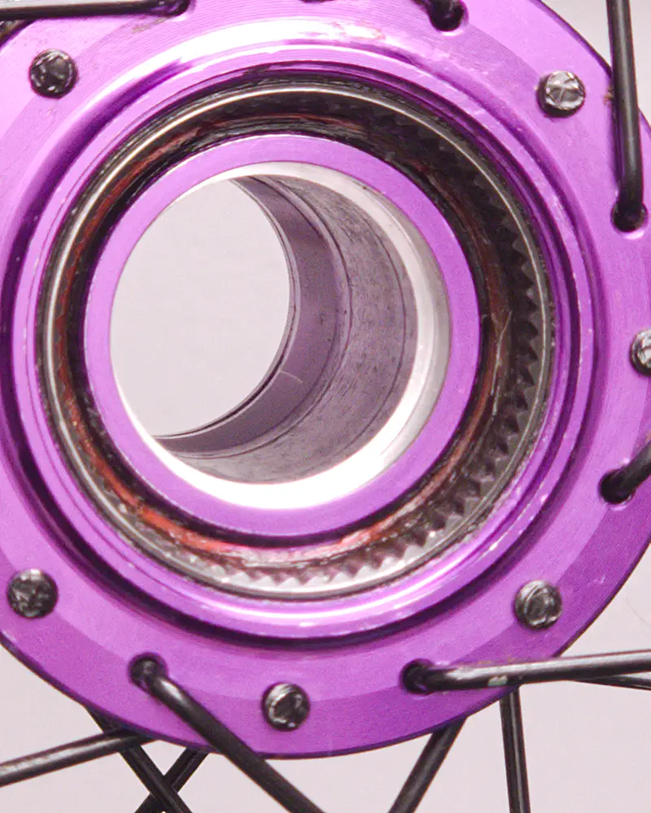
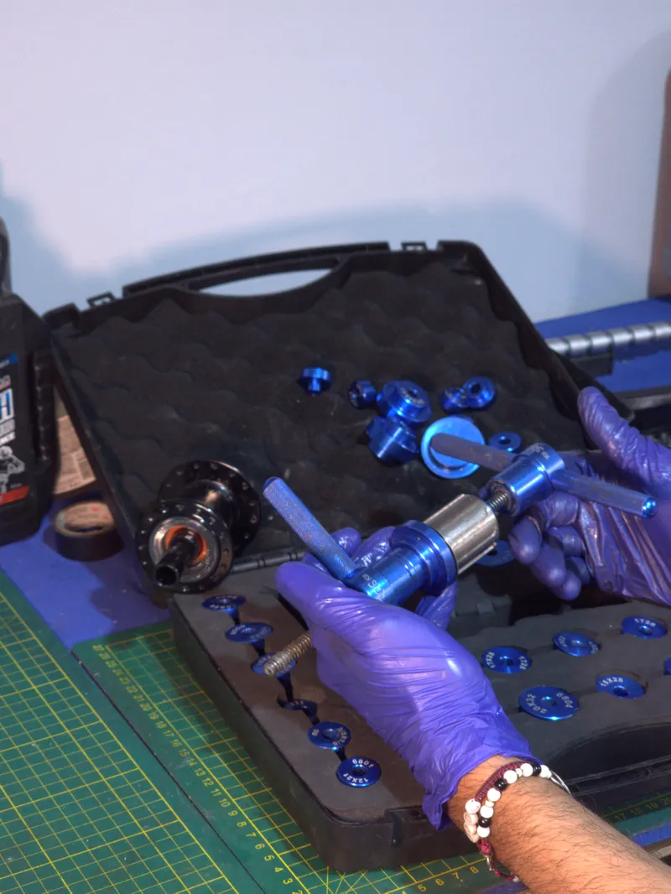
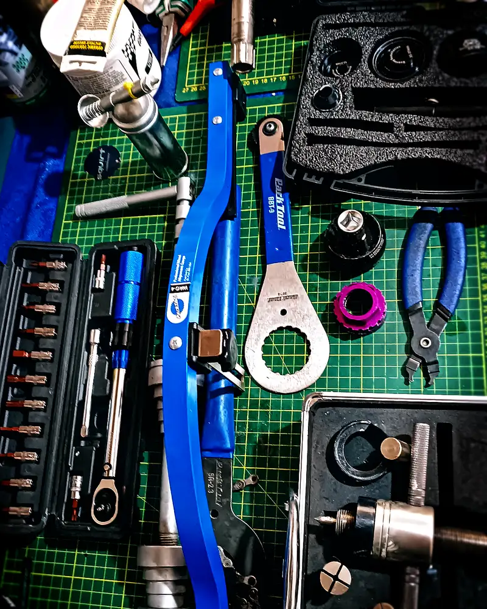

Hub maintenance depends on the bearing type. Sealed cartridges (6802/6902) are greased by lifting the seal and replaced if they have play or roughness; cup-and-cone hubs (Shimano) are adjusted to a fraction of a turn. The key in both is preload: no play, no friction. Light grease for the freehub core, NLGI 2 grease for the bearings. Interval: 75–100 h with frequent use, 150–200 h occasional.
The hub is the part that spins the most and gets looked at the least. It carries your weight, the lateral loads of every corner and the water that enters with every wash, and it's usually ignored until it "sounds wrong" or the wheel wobbles. This guide isn't a generic "clean and grease": it's the physical reason failures happen and the real step-by-step of the service, with the teardown documented on the bench.
1. How a hub works: radial and axial loads
A bicycle bearing carries two kinds of load at once. The radial load is your weight coming down the spokes toward the axle. The axial load is the lateral force in every corner, every foot plant, every push out of the wheel's plane. And here is the first nuance almost nobody explains: a radial cartridge bearing is designed for pure radial load; misaligned axial loads wear it out early. That's why the hub design —how many bearings, how far apart, with what preload— matters as much as its quality.
2. Bearing types: cartridge vs. cup-and-cone
There are two families and they're serviced in opposite ways. Confusing them is the most common mistake of generic guides.
| Feature | Sealed cartridge | Cup-and-cone |
|---|---|---|
| Typical model | 6802, 6902 (sealed 2RS) | Loose balls + adjustable cones |
| Adjustable | No | Yes (fraction of a turn) |
| Maintenance | Grease under the seal; replace if there's play | Teardown, ball count, re-adjust |
| Axial load | Lower tolerance | Excellent (angular contact) |
| Dirt resistance | Better (seals) | Lower |
| Repairable if the race fails | Yes: replace the cartridge | No: condemns the hub shell |
Shimano still uses cup-and-cone in its high end for an engineering reason: angular contact spreads oblique loads better. The rest of the industry moved to cartridge for service simplicity. Neither is "better" in the abstract; they are different philosophies.

3. Diagnosis: the three signs
Before opening anything, diagnose. There are three symptoms and each points to a different cause.
Lateral play
Hold the wheel by the rim and rock it side to side against the frame. A perceptible looseness is play. On cup-and-cone it's corrected with preload; on cartridge it almost always means a worn bearing.
Roughness
Remove the wheel, hold the axle with your fingers and turn it slowly. If it doesn't feel perfectly smooth —if it "grinds" or has hard spots— there is brinelling (ball imprints in the race) or sand contamination. That isn't greased away: it's replaced.
Freehub click
An intermittent "clack" under pedaling usually isn't the bearing but the freehub: dry pawls/teeth, a tired spring or the wrong grease. We cover it below.

4. The critical mistake: the physics of preload
Here is what almost no guide says and where most hubs get ruined. Preload is the tension with which the bearing races meet. Neither too much nor too little:
"If there's play, tighten harder." False. Excess preload increases friction and axial load on the balls: the bearing feels "rough" not because it's worn, but because it's strangled. Many "dead" bearings are over-preloaded bearings.
And the detail that separates a mechanic from an amateur: on a cup-and-cone hub, adjusting "zero play" on the bench is wrong. When you close the quick release or tighten the thru-axle to the frame's torque (typically 10–12 N·m), the clamping force microscopically compresses the axle and pushes the cones against the balls. The correct adjustment leaves an imperceptible residual play on the bench that disappears only when the wheel is mounted on the bike. Adjusting to zero on the bench = over-preload when riding.
5. The service, step by step
Remove the wheel and free the cassette
Wheel off the bike, cassette removed if you're touching the freehub. Work on a clean mat: the hub doesn't forgive sand.

Remove end caps and core
Most modern high-end hubs (DT Swiss, Hope, and high-engagement designs) open by hand: the end caps and core pull off without tools. If you need brute force, stop: you're doing something wrong.

Lay out every part
Remove bearings, seals and spacers and place them in order of extraction. On cup-and-cone, count the balls first and never mix old balls with new: the old ones have lost microns of diameter and transfer all the load to the new ones.

Degrease the bearings
For cartridges you'll reuse: carefully lift the rubber seal with a blade, degrease (ultrasonic if you have it) and let dry. For cup-and-cone: clean races, cones and balls to a mirror finish. Without the old grease there's no reliable read of the race.
Grease or replace?
Look at the running race. If it's polished and uniform, grease and reuse. If you see pitting or brinelling (regular ball indentations), the race lost its geometry: no grease fixes it, replace the cartridge. A marked race means unpredictable remaining life.

Replace the cartridge without damaging the hub
To pull a cartridge you use a blind-hole puller; to install one, a press with a drift that bears on the outer race. The fatal error here is pressing on the inner race of a new cartridge: it brinells the balls before the first turn and ruins it. Support on the correct race, straight pressure, no hammering.

Two greases, not one
Fill the bearings to about 70% with NLGI 2 grease (peanut-butter consistency; water-resistant). The freehub core is another story: it takes a fluid, thin grease (NLGI 0–1) or specific oil, in a thin layer. If you drown the ratchet in thick grease, the springs don't push the teeth in time and the core slips under torque. More grease isn't more protection: it's a failure waiting for a climb.
Mount, adjust and verify on the bike
Reassemble, leave the imperceptible residual play (see step 4), mount the wheel and close the axle to the frame's torque. Only then verify: the wheel should spin free and without play. If it's stiff, you under-loosened; if it wobbles, you over-tightened.
6. The right workshop: tools make the difference
A hub isn't serviced with improvisation. It's serviced with blind pullers of the correct diameter, presses with guide drifts, flat cone wrenches for cup-and-cone, a torque wrench for the closure and a mat that doesn't shed fibers. The difference between "I put grease in it" and "it's like factory" isn't in the hands: it's in applying force where the design asks for it. A serious workshop invests in tooling because it knows the client's frame and hub are worth far more than the puller.

7. The right grease (and the ABEC grade that doesn't matter)
Two clarifications that save money. First: the ABEC grade (1, 3, 5, 7, 9) measures tolerances for industrial regimes of tens of thousands of rpm; your wheel spins at 200–400 rpm. On a bike, the steel of the races, the seals and the lubrication weigh far more than the ABEC number. Paying for ABEC 9 "to go faster" is throwing money away. Second: don't use bearing grease in the core or chain oil in the bearings. Each mechanism needs its own rheology; mixing them is the silent cause of half of all "noisy freehubs."
8. Real maintenance intervals
Occasional use (dry road): inspect every 150–200 h or yearly. Frequent use (MTB, gravel): every 75–100 h or twice a year. After rain, mud or submersion washing: immediate inspection. Grease ages even if the bike doesn't roll: don't leave it more than a year.
The number-one enemy isn't mileage: it's water. A river crossing or a misdirected pressure wash drives more contamination in five minutes than a thousand dry kilometers. If you ride near the sea or in a humid climate, shorten the intervals; the same electrochemical principle that attacks the rest of the bike attacks here, as we saw in corrosion and thermodynamics.
BikeLab Studio.
Frequently Asked Questions
Is a little lateral play in the wheel normal?
On cup-and-cone hubs (Shimano), a minimal amount on the bench can be correct: it disappears when you close the quick release or thru-axle, because the clamping force compresses the axle. On sealed cartridge hubs, perceptible play almost always means a worn bearing or a compressed spacer, and it's fixed by replacing the bearing, not by tightening.
Can sealed cartridge bearings be serviced?
Yes. You carefully lift the seal, degrease and refill with fresh grease to about 70%; this extends their life as long as the races have no pitting. If the race is marked, no grease will save it: replace the cartridge.
What grease goes in the freehub core or ratchet system?
A specific low-viscosity (fluid) grease, not the thick bearing grease. Bearing grease is too tacky and slows the return of the ratchet springs, causing skipping under load. In the core: a thin layer of light grease; in the bearings: NLGI 2.
Does the bearing ABEC grade matter on a bicycle?
Almost not at all. ABEC measures tolerances for 20,000–30,000 rpm; a wheel spins at 200–400 rpm. Steel, ball roundness, seals and lubrication matter more. A well-sealed ABEC 3 outlasts a poorly protected ABEC 9.
How often should hubs be serviced?
Occasional: every 150–200 h or yearly. Frequent: every 75–100 h or twice a year. After rain, mud or submersion washing, inspect immediately. Grease loses its properties over time: don't leave it more than a year.
References
- Park Tool — Hub Overhaul and Adjustment.
- DT Swiss — Hub and Ratchet technical manuals (engagement 18T=20°, 36T=10°, 54T=6.67°).
- Shimano Dealer's Manual — Hub Set (cup-and-cone adjustment, tolerances).
- Enduro Bearings / SKF — Bearing basics: the real relevance of ABEC and bearing selection.
- Cartridge bearing designations: 6802 (15×24×5), 6902 (15×28×7).